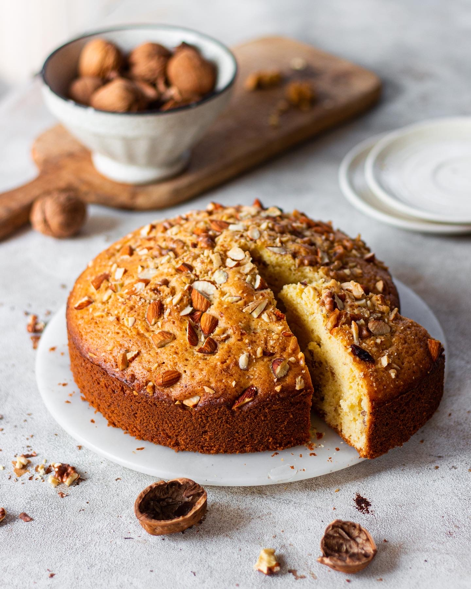

Vanilla-Sponge-Cake

Ingredients
- 2 Cup All-Purpose-Flour
- 4 Eggs
- 1 Cup Sugar
- 3/4 Cup Oil
- 2 tsp Baking Powder
- 1/2 Cup Milk
- 1 tsp Vanilla Extract
- 1/2 Chopped Nuts
Instructions
- Preheat your oven at 180 C.
- In a bowl add the flour and baking powder, mix them well using a wooden spoon.
- In a separate bowl add sugar and oil. Using an electric mixer mix them well on high speed until the mixture looks light and fluffy.
- To the sugar-oil mixture, add eggs one at a time and beat it well with the electric mixer until well combined.. Add vanilla and mix again.
- Add half of the dry ingredients that we set aside first, mix gently using a wooden spoon.
- Add the milk to the batter and mix in gently. Now add the leftover dry ingredients and combine until the batter has no large flour pockets.
- Gently fold in the nuts into the batter.
- Transfer the batter to a 8' inch cake pan lined with parchment. Bake at 180 C for 35-40 minutes or until a skewer inserted comes out clean.